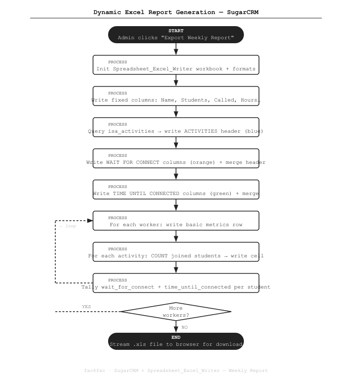

Color-Coded Weekly Excel Reports with Dynamic Columns in SugarCRM
How we export a weekly activity report from SugarCRM as a formatted .xls file — with merged section headers, per-activity dynamic columns, and color-highlighted cells.
The Problem
Our operations team needed a weekly snapshot of staff activity — how many students each worker called, how many were waiting for follow-up, and how long each connection took.
SugarCRM's built-in reports couldn't produce this layout: the activity columns were dynamic (driven by database records), and the team needed color-coded sections to scan the sheet quickly.
We built a custom export using Spreadsheet_Excel_Writer directly from a SugarCRM controller action.
What We Built
A controller action on the PT_weekly_report module that generates a complete formatted Excel workbook and streams it to the browser.
The report has three visually distinct sections with merged headers, dynamic per-activity columns populated via JOIN queries, and cell-level color highlighting for non-zero values.
How It Works

The Code
Setting up the workbook and formats
The workbook is created in-memory. We define format objects for each header color once, then reuse them:
require_once('vendor/pear/spreadsheet_excel_writer/Writer.php');
$workbook = new Spreadsheet_Excel_Writer();
$worksheet = $workbook->addWorksheet('Weekly Report');
// Bold format for all section header cells
$format_bold = $workbook->addFormat();
$format_bold->setBold();
$format_bold->setFgColor(5); // Blue — used for ACTIVITIES header
// We'll set per-section colors on separate format objects
$format_orange = $workbook->addFormat();
$format_orange->setBold();
$format_orange->setFgColor(41); // Orange — WAIT FOR CONNECT
$format_green = $workbook->addFormat();
$format_green->setBold();
$format_green->setFgColor(42); // Green — TIME UNTIL CONNECTED
// Send to browser as .xls download
$workbook->send('weekly-report.xls');Writing the three color-coded section headers
Each section header spans multiple columns using setMerge().
The activity columns are dynamic — we query isa_activities first to know how many columns to span:
public function general_header(&$workbook, &$worksheet, &$row, &$col, $format_bold)
{
// Fixed columns: Name, Students, Called, Hours
$worksheet->write($row, 0, 'Name', $format_bold);
$worksheet->write($row, 1, 'Students', $format_bold);
$worksheet->write($row, 2, 'Called', $format_bold);
$worksheet->write($row, 3, 'Hours', $format_bold);
$col = 4;
// --- ACTIVITIES section (blue) ---
$format_blue = $workbook->addFormat();
$format_blue->setBold();
$format_blue->setFgColor(5);
// Query activities dynamically
$activities_result = $GLOBALS['db']->query(
"SELECT id, name FROM isa_activities WHERE deleted=0 ORDER BY name"
);
$activities = [];
while ($act = $GLOBALS['db']->fetchByAssoc($activities_result)) {
$activities[] = $act;
}
$act_start = $col;
foreach ($activities as $act) {
$worksheet->write($row + 1, $col, $act['name'], $format_bold);
$col++;
}
// Merge header across all activity columns
$worksheet->setMerge($row, $act_start, $row, $col - 1);
$worksheet->write($row, $act_start, 'ACTIVITIES', $format_blue);
// --- WAIT FOR CONNECT section (orange) ---
$format_orange = $workbook->addFormat();
$format_orange->setBold();
$format_orange->setFgColor(41);
$wfc_start = $col;
$worksheet->write($row + 1, $col++, 'New', $format_bold);
$worksheet->write($row + 1, $col++, 'Waiting', $format_bold);
$worksheet->write($row + 1, $col++, 'Total', $format_bold);
$worksheet->setMerge($row, $wfc_start, $row, $col - 1);
$worksheet->write($row, $wfc_start, 'WAIT FOR CONNECT', $format_orange);
// --- TIME UNTIL CONNECTED section (green) ---
$format_green = $workbook->addFormat();
$format_green->setBold();
$format_green->setFgColor(42);
$tuc_start = $col;
$worksheet->write($row + 1, $col++, 'Avg (days)', $format_bold);
$worksheet->write($row + 1, $col++, 'Min', $format_bold);
$worksheet->write($row + 1, $col++, 'Max', $format_bold);
$worksheet->setMerge($row, $tuc_start, $row, $col - 1);
$worksheet->write($row, $tuc_start, 'TIME UNTIL CONNECTED', $format_green);
return $activities;
}Writing data rows with per-activity JOIN queries
For each worker, we run one JOIN query per activity to count students. Non-zero cells get a yellow highlight:
public function general_row(&$workbook, &$worksheet, $worker, $row, $activities)
{
$format_highlight = $workbook->addFormat();
$format_highlight->setFgColor(43); // Yellow highlight for non-zero cells
$col = 0;
$worksheet->write($row, $col++, $worker['full_name']);
$worksheet->write($row, $col++, $worker['total_students']);
$worksheet->write($row, $col++, $worker['calls_made']);
$worksheet->write($row, $col++, $worker['hours_worked']);
// Per-activity student counts
foreach ($activities as $act) {
$sql = "SELECT COUNT(s.id) AS cnt
FROM isa_students s
JOIN isa_students_isa_activities_1 rel
ON rel.isa_students_ida = s.id AND rel.deleted = 0
WHERE rel.isa_activities_idb = '{$act['id']}'
AND s.assigned_user_id = '{$worker['id']}'
AND s.deleted = 0";
$result = $GLOBALS['db']->query($sql);
$data = $GLOBALS['db']->fetchByAssoc($result);
$count = (int)$data['cnt'];
// Highlight non-zero cells so they're easy to spot
$fmt = ($count > 0) ? $format_highlight : null;
$worksheet->write($row, $col++, $count, $fmt);
}
// Wait for connect aggregates (tally from student records)
$wfc = $this->get_wait_for_connect($worker['id']);
$worksheet->write($row, $col++, $wfc['new']);
$worksheet->write($row, $col++, $wfc['waiting']);
$worksheet->write($row, $col++, $wfc['total']);
// Time until connected aggregates
$tuc = $this->get_time_until_connected($worker['id']);
$fmt_tuc = ($tuc['avg'] > 0) ? $format_highlight : null;
$worksheet->write($row, $col++, $tuc['avg'], $fmt_tuc);
$worksheet->write($row, $col++, $tuc['min']);
$worksheet->write($row, $col++, $tuc['max']);
}Streaming the file to the browser
Once all rows are written, close() flushes the workbook to the HTTP response:
// In the main action method:
$workbook->send('weekly-report-' . date('Y-m-d') . '.xls');
$row = 0;
$activities = $this->general_header($workbook, $worksheet, $row, $col, $format_bold);
$row += 2; // skip header + subheader rows
$workers = $this->get_all_workers();
foreach ($workers as $worker) {
$this->general_row($workbook, $worksheet, $worker, $row, $activities);
$row++;
}
$workbook->close(); // streams file, exitsKey Points
- Dynamic columns. Activity columns are not hardcoded — they're driven by whatever is in
isa_activities. Add a new activity to the CRM and it appears in the next export automatically. - Merged color headers.
setMerge()+setFgColor()makes the three sections visually distinct at a glance. Color index 5/41/42 maps to Excel's built-in blue/orange/green palette. - Cell-level highlighting. Non-zero cells get a yellow background so the reader's eye is drawn to activity immediately, without needing to scan numbers row by row.
- Zero framework overhead. The PEAR library writes directly to the XLS binary format. No Excel installation, no temporary files — the workbook streams inline as the HTTP response.
Stack
Need custom reporting out of SugarCRM? Get in touch →